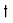
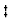
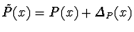
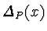
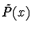

Akira Terui
 
Doctoral Program in Mathematics
Institute of Mathematics
University of Tsukuba
Tsukuba-shi, Ibaraki 305-8571, Japan
{terui,sasaki}@math.tsukuba.ac.jp
Let P(x) be a given univariate polynomial and

, where
is a sum of error terms, i.e., a polynomial with small unknown but bounded coefficients. We first consider specifying small domains in which the zero-points of
exist, by the (approximate) zero-points of P(x) and the coefficient bounds of . The existential domains are determined fairly small by applying Smith's theorem which specify the error bounds of the approximations for the zero-points. This leads us to a concept of ``approximate zero-points'' of an approximate polynomial. We next consider counting the number of approximate real zero-points of , by investigating the Sturm sequence. For polynomials with small error terms, calculating the Sturm sequence imposes us two problems: 1) some leading term may become very small, and 2) it is not easy to count the approximately multiple zero-points because the termination criterion is unclear. For the first problem, we apply the subresultant theory to the sequence and show that very small leading terms may be discarded. For the second problem, we propose a method of counting the number of approximately multiple zero-points by using approximate square-free decomposition and calculating existential domains of the zero-points of the approximate polynomial as the above.